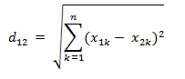

任务四 人脸识别
【任务描述】
经过前面的几个任务，你已经学会如何进行人脸检测、人脸矫正以及人脸特征提取了，那么提取的特征是怎么使用的呢？
当我们直接通过CNN学习一副输入人脸图像的欧式空间特征时，两幅图像特征向量间的欧式距离越小，表示两幅图像是同一个人的可能性越大。一旦有了这个人脸图像特征提取模型，那么人脸验证就变成了两幅图像相似度和指定阈值比较的问题。
如下图，无论是改变光照还是角度，相同人之间的特征距离都要小于不同人之间的特征距离，然后我们只要通过判断特征距离是否小于某个阈值就可以判断是否是同一个人，从而进行人脸识别。

【任务实施】
步骤1 人脸欧式距离计算
欧氏距离是最易于理解的一种距离计算方法，源自欧氏空间中两点间的距离公式，若存在两个n维向量a(x11,x12,…,x1n)与 b(x21,x22,…,x2n)，那么他们之间的距离可表示为：

在python中的实现如下：
import numpy as np
def get_distance(image1,image2):
l1 = np.sqrt(np.sum(np.square(image1 - image2), axis=-1))
return l1
步骤2 人脸识别
知道如何获取人脸特征，如何计算人脸距离之后，我们就可以给定阈值，并且通过阈值判断是否是同一个人了。首先，我们先加载人脸特征库中的数据，代码如下：
from facefeatures import get_face_roi,get_face_features
import numpy as np
import cv2
import os
# 加载人脸特征
def load_know_face(path):
npy_paths = [os.path.join(path ,p) for p in os.listdir(path)]
data =[]
face_names = []
for npy_path in npy_paths:
name = npy_path.split('\\')[-1].split('.')[0]
face_names.append(name)
data.append(np.load(npy_path)[0])
return data,face_names
接着，在main中写入如下代码，即可制作一个简易的人脸识别程序，由于我们这里调用了上一个任务中的函数，所以记得把get_face_features()中保存特征的代码去掉。
if __name__ == '__main__':
face_know_features,face_names = load_know_face('knowface')
# 加载要识别的人的图片
image_path = r'images\huge2.jpg'
img= cv2.imread(image_path)
img_roi = get_face_roi(img)
#获得特征
features = get_face_features(img_roi)
# 计算人脸距离
distance = get_distance(face_know_features,features)
# 判断最小的距离是否小于阈值
min_dis_index = distance.argmin()
if distance[min_dis_index]<0.7:
print('已识别到此人为：%s'%face_names[min_dis_index])
else:
print('未能识别此人')
程序运行结果如下，第一张识别huge2.jpg，由于之前已经录入huge1.jpg的人脸特征，所以可以进行识别，而第二张由于没有提前录入人脸，所以并不能识别到：
本任务实战代码如下,位于/xm3/rw4.ipynb 同学们来运行一下吧